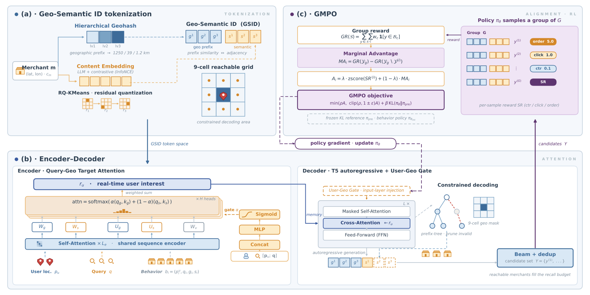
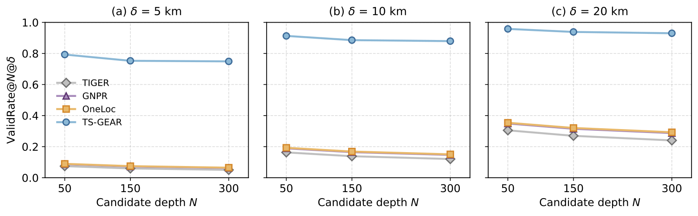
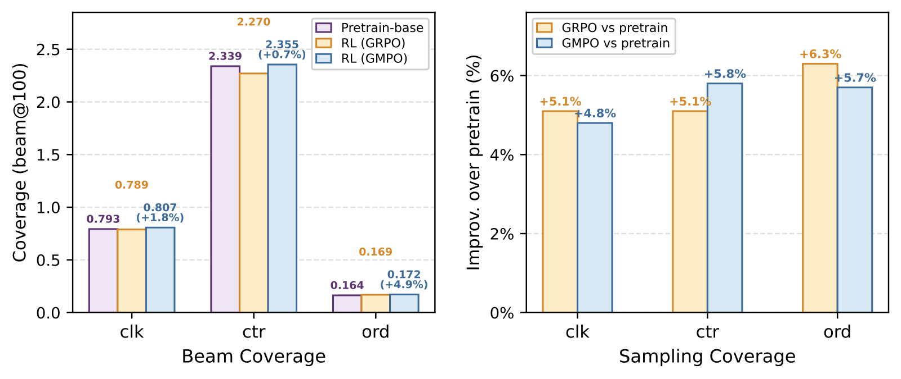

目录 · 6 节
1模型要先生成商家在哪个格子2差距为什么到 20 km 才拉开3拿掉前缀，结果退回基线4送得到之后，还要猜对这次想买什么5beam 塌到同一家店时，单条打分失灵6线上只能算整条通道的账TS-GEAR 让模型先生成商家所在的地理格子、再生成商家内容，把“送得到”变成了生成目标，收益也因此集中在可达集合大的 20 km 半径上。
论文自己的例子最能说明问题。用户 A 工作日在公司附近点外卖，历史订单几乎都是牛肉盖饭。一个周末的早上，用户 A 在家搜“牛肉”，想买的是做饭用的生鲜。普通的生成式召回会顺着历史走，把 beam 留给公司附近的盖饭店。这些店语义上没错，却送不到家里，只能在生成之后被距离过滤掉，占用的 beam 名额也拿不回来。

这个问题在淘宝闪购的搜索广告里有多大，看线上使用的 20 km 召回半径就知道。最强基线 OneLoc 排在前 50 的候选里，只有 35.4% 落在半径内，TS-GEAR 是 95.8%，说明基线的大部分名额都花在了送不到的商家上。衡量召回命中的 HitRate@50 因此提升 36.3%，同一指标在 5 km 半径只提升 1.2%。
模型要先生成商家在哪个格子
生成式召回把每个商品表示成 semantic ID（SID，几个离散 token 组成的编码），再由模型逐个 token 生成。已有 SID 来自内容或协同信号，token 里没有空间结构，所以可达性只能靠生成之后的距离过滤。这一步不可导，也不在训练目标里。
TS-GEAR 的 Geo-Semantic ID（GSID，前三位表示地理、后三位表示内容的商家 ID）改变了这一点。地理部分取商家的 6 位 geohash，每两个字符切成一个 token，表示的范围从约 1250 km 缩到 39 km，再缩到 1.2 km。内容部分由微调过的 Qwen3-Embedding 经 RQ-KMeans 量化得到。
地理放在 ID 最前面，约束就能直接加在解码上。用户的 4 位 geohash 对应约 39 km 的格子，连同周围 8 格基本覆盖平台的最大配送半径。前两个地理 token 因此只能取这至多 9 个前缀，六步生成减少到四步。线上查出九格前缀后作为 forced prefill 直接填入，跳过前两步并复用 KV cache，这是 0.1B 模型跑进 70 ms 预算的加速手段之一。

九格拼起来明显大于 20 km 半径，所以它只挡掉远处的区域。公司和家如果离得不远，盖饭店所在的大格可能仍在九格之内。具体落到哪个 1.2 km 小格，要靠第三个地理 token 学出来。User-Geo Gate 在这里帮忙：它只在生成三个地理 token 时注入用户当前位置的 embedding，用可学习的门控调节强度，属于软偏置。
差距为什么到 20 km 才拉开
先看 HitRate@N@δ 怎么算：沿 beam 顺序只保留距离 δ 内的去重商家，取前 N 个，看是否命中用户点击过的商家。所有模型都先过滤距离再截断，所以基线并没有因为把送不到的店算进结果而吃亏。差距来自 beam 里留下的可达候选有多少、顺序好不好。

ValidRate 衡量未经过滤的 top-N 里有多少落在半径内。TS-GEAR 在任何深度和半径下都不低于 74.9%，基线都不超过 35.4%。这个优势在 5 km 同样存在，HitRate@50 却只比 OneLoc 高 1.2%，到 20 km 才高 36.3%，说明有效比例本身解释不了提升的幅度。
作者的解释是可达集合的大小。半径小时可达商家少，前 50 个已覆盖其中很大一部分，各方法都接近饱和。半径变大后，任务变成在大集合里挑用户可能点击的近处商家，候选集中在可达区域才变成优势。20 km 下放宽 N 也符合这个读法：提升从 HitRate@50 的 36.3% 降到 HitRate@300 的 11.5%，我理解这是因为名额越多，基线浪费名额的代价越小。
如果真是前缀在起作用，拿掉它就应该退回基线水平。
拿掉前缀，结果退回基线
下表是工业数据集上的 HitRate@50 消融结果。
| 模型 | 5 km | 10 km | 20 km |
|---|---|---|---|
| OneLoc（基线） | 0.7778 | 0.7092 | 0.5929 |
| 去掉前缀和 gate | 0.7819 | 0.7124 | 0.5960 |
| 只去掉前缀 | 0.7794 | 0.7111 | 0.5947 |
| 只去掉 User-Geo Gate | 0.7773 | 0.7961 | 0.7934 |
| 去掉 Query-Geo Target Attention | 0.7661 | 0.7836 | 0.7820 |
| 完整 TS-GEAR | 0.7869 | 0.8090 | 0.8080 |
去掉地理前缀后，20 km 的 HitRate@50 从 0.8080 掉到 0.5947，几乎与 OneLoc 相同。
5 km 的数字几乎不动，这和上一节的饱和解释一致。更有意思的是前两行：前缀没了以后，再去掉 gate 反而略好，HitRate@50 高 0.13 到 0.25 个百分点。作者的解释是 gate 只能在前缀圈定的范围里调整顺序，失去这个范围后，它在整个 ID 空间里加权只会给解码添噪声。
反过来，保留前缀只去掉 gate，HitRate@50 在三个半径下分别掉 0.96、1.29、1.46 个百分点。作者把这看作分工：前缀决定哪些 token 允许生成，gate 决定先生成哪个可达格子。
作者还有一句更强的判断：收益更多来自可达范围内排得对，较少来自可达本身。我的理解是，前缀同时带来了可达和按位置学习顺序的能力，那 21 个百分点不能全记在可达头上。能直接对照的是 TIGER，它就是普通 SID 加事后过滤，20 km 的 HitRate@50 只有 0.5796。这组对比支持“事后保证可达不够”，至于解码时加 mask 也不够，则是作者的推理。
送得到之后，还要猜对这次想买什么
前缀挡住了远处的店，但用户 A 家附近既有盖饭也有生鲜。行为聚合如果不看场景，表示就会被更高频的公司场景带偏。
Query-Geo Target Attention 用当前请求给每条历史行为打分，分两条路径。地理路径用当前位置匹配“行为发生时的位置和商家地理”，语义路径用当前查询匹配“商家内容和当时的查询”，再由一个门控混合。设计意图是让离当前位置很远时发生的行为被降权。
去掉这个模块，HitRate@50 掉 2.08、2.54、2.60 个百分点，比去掉 gate 掉得多，相对增幅也更平缓。作者据此认为它作用在兴趣表示上，和可达性是两件事，所以小半径下收益不会像前缀那样消失。
到这里每个候选单独看都合格了，可还有一个问题：它们放在一起可能是同一家连锁的几家分店。
beam 塌到同一家店时，单条打分失灵
GRPO（一种无 critic 的策略优化方法）按每个样本自己的奖励做 z-score 后更新策略。作者指出，这里多达七成的查询只有一次点击，预训练后的策略本来就很集中。一旦 beam 全部塌到同一个 GSID，z-score 后的 advantage 加和为零，梯度消失。
GMPO（Group Marginal Policy Optimization，按样本对整组的边际贡献计分的方法）换了算分方式。一组采样 8 个序列，先算去重并集的总奖励，下单、点击、高 CTR 的权重分别是 5.0、1.0、0.1。某个样本的 advantage，就是留出它之后总奖励减少了多少。线上配置 λ=0，只用这个边际项。
下面用一个自拟的小算例对比两种算分方式：8 个样本里，4 个生成下单过的店 B，3 个生成点击过的店 A，1 个生成另一家点击过的店 C。GRPO 下 B 的奖励最高，z-score 后为正，所以策略继续往 B 集中。GMPO 下，留出任一个 B 或 A 样本，并集都不变，所以边际为 0，只有 C 的边际是 1。我的理解是，这个机制的作用点在塌缩发生之前：8 个样本若已完全相同，留一后的边际同样全是 0。

在 beam@100 去重的覆盖率上，GRPO 相对预训练模型的高 CTR 覆盖下降 2.9%，只有权重最高的下单覆盖上升 3.3%，作者认为这说明它牺牲了 beam 内的多样性。GMPO 的三项覆盖都上升，其中下单 +4.9%，高 CTR 也转正到 +0.7%。换成采样协议，两者几乎分不开，都明显好于预训练模型。作者归因于采样的随机性维持了多样性，掩盖了塌缩，而线上用 beam search，只看采样结果会高估线上收益。
线上只能算整条通道的账
TS-GEAR 作为一路增量召回，与关键词、向量等召回并行，结果一起进入广告排序和竞价。为了衡量这路召回的增量，团队在 20% 流量上连续 7 天做 A/B 实验，实验组相对对照组的广告曝光 +3.8%，广告收入 +4.2%，均为 p<0.01。它已全量上线，每天服务超过 1.5 亿次搜索请求。
这些数字是这路召回作为整体带来的增量，不能拆到前缀、attention 或 GMPO 各自头上，前缀、gate 和 attention 的分量只能看离线消融。作者也写明了代价：曝光会向附近历史转化高的商家集中，新入驻商家出现得更少。
回到周末搜牛肉的用户 A，TS-GEAR 做的事可以这样概括：先用前缀把 beam 名额留给送得到的区域，再用当前位置和查询决定这些名额给谁，最后在训练时只强化能带来新覆盖的序列。离线上最大的那段提升，正好出现在可达集合最大的 20 km 半径。
读完这篇，你觉得
夜读鸮记下了，谢谢你的反馈。
点一下即可，无需登录；再点一次撤回。只统计匿名次数，不记录你是谁。
相关论文RELATED
 Generative · 2026-07-23TSGR: Taobao Search Generative Retrieval淘宝搜索的 TSGR 在 SID 第 3 层按点击给商品排座次，并按 query 准备多套排序，让卖得好又贴合 query 的商品更容易被生成，同一模型再接打分模块做重排。离线 HR@1000 从 0.7735 提到 0.8651，线上 GMV +1.64%；但重排抬高了前 1000 命中、压低了前 20 命中。
Generative · 2026-07-23TSGR: Taobao Search Generative Retrieval淘宝搜索的 TSGR 在 SID 第 3 层按点击给商品排座次，并按 query 准备多套排序，让卖得好又贴合 query 的商品更容易被生成，同一模型再接打分模块做重排。离线 HR@1000 从 0.7735 提到 0.8651，线上 GMV +1.64%；但重排抬高了前 1000 命中、压低了前 20 命中。 Generative · 2026-11-05ReuseGR: Offline--Online Decoupled Generative Retrieval via Adaptive Prefix Reuse做生成式检索上线的团队值得读：它给出了一种拆法，大模型的算力按搜索词复用，个性化留给在线小模型，并且有线上 A/B 验证。同一个搜索词每天被很多人搜，每次都从头生成完整的 Semantic ID 是在重复计算。ReuseGR 把活拆成两半：离线用大模型给每个搜索词先生成一批 SID 前缀，同词的请求共用；在线用小模型按当前用户的历史挑前缀，再补全剩下的 token。在一个搜索广告数据集上，假设前缀已提前缓存好，它的召回和全程在线跑大模型持平，在线延迟却低 57.7%；线上 A/B 里，点击率比原来的小模型方案相对提高 0.93%。
Generative · 2026-11-05ReuseGR: Offline--Online Decoupled Generative Retrieval via Adaptive Prefix Reuse做生成式检索上线的团队值得读：它给出了一种拆法，大模型的算力按搜索词复用，个性化留给在线小模型，并且有线上 A/B 验证。同一个搜索词每天被很多人搜，每次都从头生成完整的 Semantic ID 是在重复计算。ReuseGR 把活拆成两半：离线用大模型给每个搜索词先生成一批 SID 前缀，同词的请求共用；在线用小模型按当前用户的历史挑前缀，再补全剩下的 token。在一个搜索广告数据集上，假设前缀已提前缓存好，它的召回和全程在线跑大模型持平，在线延迟却低 57.7%；线上 A/B 里，点击率比原来的小模型方案相对提高 0.93%。 Generative · 2026-10-29PailitaoMMSearch2.0 Technical Report: Scaling Generative Retrieval to Unified End-to-End Multimodal Search淘宝拍立淘里，用户拍一件衬衫再说「找条配它的短裤」，要的是搭配而不是同款。传统做法先分意图、再分发到不同召回通道，任何一步分错后面全错。阿里这篇技术报告让一个 2B 视觉语言模型直接读原图和原话，生成商品的 Semantic ID，不需要意图标签。优秀率指前 10 个结果里被评审模型判满分的比例。「找搭配」请求的这一指标从多路召回链路的 44.2% 提到 74.3%，线上 GMV 提升 8.94%，已全量上线。
Generative · 2026-10-29PailitaoMMSearch2.0 Technical Report: Scaling Generative Retrieval to Unified End-to-End Multimodal Search淘宝拍立淘里，用户拍一件衬衫再说「找条配它的短裤」，要的是搭配而不是同款。传统做法先分意图、再分发到不同召回通道，任何一步分错后面全错。阿里这篇技术报告让一个 2B 视觉语言模型直接读原图和原话，生成商品的 Semantic ID，不需要意图标签。优秀率指前 10 个结果里被评审模型判满分的比例。「找搭配」请求的这一指标从多路召回链路的 44.2% 提到 74.3%，线上 GMV 提升 8.94%，已全量上线。 Personalization · 2026-11-06From Waste to Discovery: Recycling High-Scored Unexposed Candidates in Taobao Feed Recommendation推荐排序每天都算了大量最终没有展示的候选。这篇工作把其中的高分候选重新用于发现新类目：把这些候选按用户累计一个月，筛出近期没有展示过的类目，再接回召回。在淘宝信息流的在线实验里，按实际展示计数的发现类目数相对增加 3.47%，完整观看次数增加 2.62%；两项都达到统计显著。总观看次数没有显著变化。这里改的是候选的保存和使用方式，排序模型不用重训。
Personalization · 2026-11-06From Waste to Discovery: Recycling High-Scored Unexposed Candidates in Taobao Feed Recommendation推荐排序每天都算了大量最终没有展示的候选。这篇工作把其中的高分候选重新用于发现新类目：把这些候选按用户累计一个月，筛出近期没有展示过的类目，再接回召回。在淘宝信息流的在线实验里，按实际展示计数的发现类目数相对增加 3.47%，完整观看次数增加 2.62%；两项都达到统计显著。总观看次数没有显著变化。这里改的是候选的保存和使用方式，排序模型不用重训。 Generative · 2026-11-02PFA: Attention Can Be Progressively Focused in Long-Sequence Generative Recommendation阿里的作者发现，生成式推荐做 beam 解码时，越往后注意力越集中在少数几条历史行为上，而且哪些行为重要，前后几步基本不变。据此提出的 PFA 把挑选重要历史这件事，从每步、每条 beam 各挑一次，改成整个解码只挑一次。它在解码第一步照常看完整历史；到第二步，把各条 beam 对历史的注意力按生成概率加权汇总，排出一份共用的重要行为排名，后面每步保留的行为数按固定比例缩小。在电商广告平台的线上 A/B 中，用户历史从 128 条加长到 512 条，收入提升 3.76%。响应时间仍比直接读完整历史更短。
Generative · 2026-11-02PFA: Attention Can Be Progressively Focused in Long-Sequence Generative Recommendation阿里的作者发现，生成式推荐做 beam 解码时，越往后注意力越集中在少数几条历史行为上，而且哪些行为重要，前后几步基本不变。据此提出的 PFA 把挑选重要历史这件事，从每步、每条 beam 各挑一次，改成整个解码只挑一次。它在解码第一步照常看完整历史；到第二步，把各条 beam 对历史的注意力按生成概率加权汇总，排出一份共用的重要行为排名，后面每步保留的行为数按固定比例缩小。在电商广告平台的线上 A/B 中，用户历史从 128 条加长到 512 条，收入提升 3.76%。响应时间仍比直接读完整历史更短。 Generative · 2026-11-02UGR: Unified Generative Ranking for Heterogeneous E-commerce Recommendation淘宝的生成式排序框架 UGR 让一个生成模型直接排出用户最后看到的那一屏：一次请求里约一千个自然内容、广告和其他业务的候选一起交给它，逐个生成最终列表，不再由各业务先各自排好、再交给混排拼接。拼接这一步正是原来的毛病：生成模型排好的列表被混排插进别的内容，位置和上下文都变了，模型学到的前后顺序就不成立了。在猜你喜欢的线上 A/B 中，成交量提升 3.29%；同一个模型只排自然内容、再交给原来的混排，成交量只涨 2.84%，差出来的部分就是统一生成本身的收益。
Generative · 2026-11-02UGR: Unified Generative Ranking for Heterogeneous E-commerce Recommendation淘宝的生成式排序框架 UGR 让一个生成模型直接排出用户最后看到的那一屏：一次请求里约一千个自然内容、广告和其他业务的候选一起交给它，逐个生成最终列表，不再由各业务先各自排好、再交给混排拼接。拼接这一步正是原来的毛病：生成模型排好的列表被混排插进别的内容，位置和上下文都变了，模型学到的前后顺序就不成立了。在猜你喜欢的线上 A/B 中，成交量提升 3.29%；同一个模型只排自然内容、再交给原来的混排，成交量只涨 2.84%，差出来的部分就是统一生成本身的收益。 Generative · 2026-10-29KL-MOPD: Discrepancy-Aware Multi-Objective On-Policy Distillation for Generative Recommendation把点击老师和价值老师一起蒸馏进生成式推荐时，每个 token 平分权重并不公平：在 TencentGR 上，学生生成第 1 个 token 时离价值老师的 KL 是离点击老师的 3.13 倍，而且难学的老师在后两个 token 换成了点击老师。浙大和阿里的 KL-MOPD 在训练前算一次学生离两个老师的距离，每个 token 上离得更远的老师拿更大的权重，训练时没有额外开销。线上 A/B 中，广告收入提升 1.63%，说明点击和价值两个目标一起涨了。
Generative · 2026-10-29KL-MOPD: Discrepancy-Aware Multi-Objective On-Policy Distillation for Generative Recommendation把点击老师和价值老师一起蒸馏进生成式推荐时，每个 token 平分权重并不公平：在 TencentGR 上，学生生成第 1 个 token 时离价值老师的 KL 是离点击老师的 3.13 倍，而且难学的老师在后两个 token 换成了点击老师。浙大和阿里的 KL-MOPD 在训练前算一次学生离两个老师的距离，每个 token 上离得更远的老师拿更大的权重，训练时没有额外开销。线上 A/B 中，广告收入提升 1.63%，说明点击和价值两个目标一起涨了。
讨论
欢迎补充实验细节、复现经验或不同看法。需 GitHub 登录。
正在加载讨论…